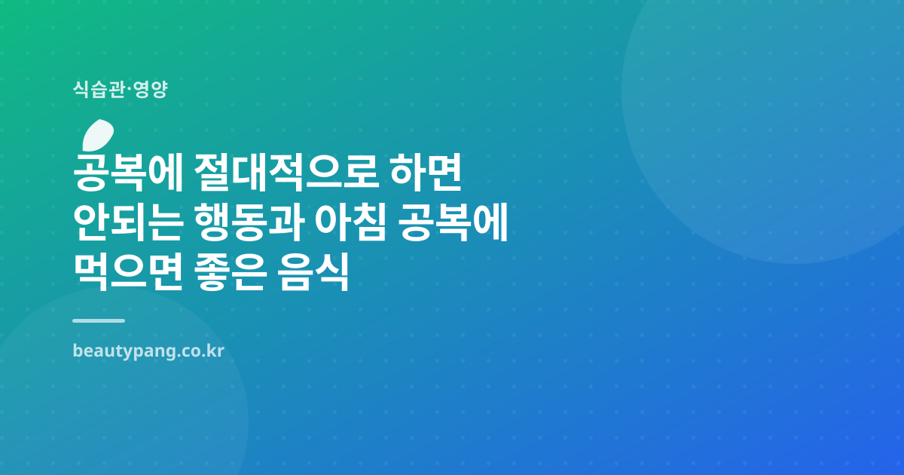

아침식사보다 아침에 늦잠을 택하는 사람들은 이 글을 꼭 보시기를 권장합니다. 설문조사에 따르면 아침식사를 하지 않는다는 비율이 초중고 학생들에게서는 10%~30% 정도였으나 직장인의 경우 무려 50% 이상이 넘는다고 합니다. 공복 상태에서는 뇌에 공급할 에너지가 부족해 사고력과 집중력이 매우 떨어져 쉽게 피로감을 느낀다고 하는데 이런 상황에서 하지 말아야 할 행동에는 어떤 것들이 있는지 알아보도록 하겠습니다.
- 공복에 운동하기
건강을 유지하기 위해 또는 살을 빼기 위해서 하는 아침 공복 유산소 운동이 좋다는 말을 한 번쯤 들어봤을 것입니다. 여러 연구에 따르면 살이 빠져 보일 수 있지만 사실은 살이 아닌 근육 손실에 따른 체중 감량이라고 합니다. 공복에 운동을 하게 되면 끌어 쓸 에너지가 부족하여 근육을 에너지로 대신 사용하게 돼 장기적으로 공복 운동을 하게 되면 결과적으로 건강에 매우 안 좋다고 합니다.
눈 뜨자마자 버릇처럼 냉수를 들이켠다면 자신의 몸에게 아프라고 부탁하는 것과 똑같다고 합니다. 공복에 찬물을 먹으면 체온이 빠르게 떨어지는데 체온을 올릴 때 필요한 에너지가 부족하여 몸에 이상반응이 생길 수 있습니다. 저 체온으로 인한 소화 기능장애와 두통을 유발할 수 있어 조심해야 하며 체온이 낮아지면 면역력이 떨어져 만병의 원인이 될 수 있습니다. 공복에 마시는 물은 체온과 비슷한 온도(30도 전후)의 물이 가장 좋다고 합니다.
앞서 말했듯이 공복 상태에서는 사고력과 집중력이 매우 저하된 상태이기 때문에 능률이 평소만큼 나오지 않게 됩니다. 특히 중요한 시험이 있을 때 입맛이 없거나 탈이 날까 봐 굶고 가는 경우가 있는데 공복 상태에서는 좋은 시험 결과를 기대하기 힘들 수도 있습니다. 이럴 땐 소화가 잘 되는 죽이라도 간단히 먹고 가길 권장합니다.
- 꿀
잠자기 전에 먹으면 숙명을 유도해주어 잠을 푹 잘 수 있게 도와주는 꿀은 아침에 먹으면 피로 해소에도 좋고 뇌를 활성화해 몸에 활력을 가져와 잠을 깨우는데 도움을 줍니다. 꿀은 약 80% 이상이 당분으로 구성된 단당류이기 때문에 에너지원으로 흡수가 쉽기 때문입니다. 장운동을 촉진하는 효능도 있어 변비 완화에도 좋으며 그냥 먹기 어려우면 차나 우유에 섞어 먹는 것도 좋은 방법중에 하나입니다.
고구마가 공복에 좋지 않다면 대신 감자를 적극 추천합니다. 감자의 녹말 성분이 코팅 역할을 해 위를 보호하여 주며 비타민이 충분히 함유되어 있어 고혈압 예방 효과가 있고 탄수화물도 풍부해서 하루에 필요한 에너지를 축적하는데도 좋습니다. 포만감을 느끼기에 좋으니 미리 감자를 쪄두면 보다 편리하게 먹을 수 있으며 위산이 적은 아침 공복 시간에 먹으면 감자의 효능이 오래동안 지속됩니다.
토마토에 들어 있는 라이코펜, 베타카로틴, 루테인 등 항산화 물질은 혈압을 낮추는 효과가 있습니다. 아침에 일어났을 때 보통 혈압이 오르기 때문에 아침에 먹는 토마토는 혈압 수치 관리에 도움이 될 수 있으며 소화를 돕는 성분도 있어 식후에 먹으면 좋습니다. 하지만 토마토는 혈압을 낮춰 몸을 차게 해 몸이 약한 고령자나 저혈압인 사람은 생으로 먹지 말고 익혀 먹는 것이 좋습니다.
영양분이 풍부한 귀리를 납작하게 만들어 판매되는 오트밀에는 천연 산화방지제라고 불리는 비타민E와 항산화제성분, 베타-글루칸 등 많은 성분이 함유되어있습니다. 또한 근육에도 많은 단백질을 제공해주며 활력을 돋우고 체중감량에도 도움을줍니다. 수용성 섬유질이 풍부하여 혈관 속의 콜레스테롤을 낮추는 효과가 있어 귀리와 베리류를 함께 요거트에 넣어 먹으면 아침식사 대용으로도 좋습니다.
요구르트에는 프로스타글란딘 E2라는 물질이 풍부하게 들어 있는데 이 성분은 궤양을 완화하고 흡연, 음주 시 인체로 흡수되는 유해한 물질로부터 위 내벽을 보호합니다. 밤에 먹으면 밤새 위장 운동을 활발하게 해 숙면을 방해할 수 있으니 아침에 먹는 것이 좋습니다.
양배추는 위벽을 보호하고 위장 점막 강화에 큰 도움을 주어 위염, 위궤양, 장염, 대장질환 환자들에게 특히 좋은 식품입니다. 특히 비타민과 식이섬유가 풍부하고 섬유질도 많이 포함하고 있기 때문에 바쁜 직장인들의 공복감 해소에 효과적입니다. 삶은 양배추를 먹기도 하고 즙으로 갈아 마시는 경우가 많지만 양배추만 먹기 어렵다면 다른 채소, 과일들과 함께 먹으면 보다 더 쉽게 섭취할 수 있습니다.
반대로 아침 공복에 먹으면 안되는 나쁜 음식들이 있습니다. 고구마는 다량으로 함유된 식이섬유로 인해 몸에 좋은 대표 음식으로 손꼽히며 다이어트 하는 사람들에게는 필수적인 음식이지만 고구마에 들어 있는 아교질, 타닌 등의 성분이 위벽을 자극하고 위산 과다 분비를 촉진하여 위장장애를 일으킬 수 있습니다. 바나나도 아침 대용으로 손쉽게 먹고 있는 음식이지만 공복에 섭취할 경우 혈액 중 칼륨과 마그네슘 함량을 증가시켜서 균형을 깨뜨릴수 있기 때문에 주의해야 합니다. 우유도 여러 영양분을 다량으로 함유하고 있기 때문에 공복에 섭취할 경우 많은 도움이 될거라 생각이 들지만 우유에 들어있는 칼슘과 단백질이 위산 분비를 촉진시켜 위벽을 자극하여 무리를 주기 때문에 좋지 않다고 합니다.
함께 보면 좋은 계산기